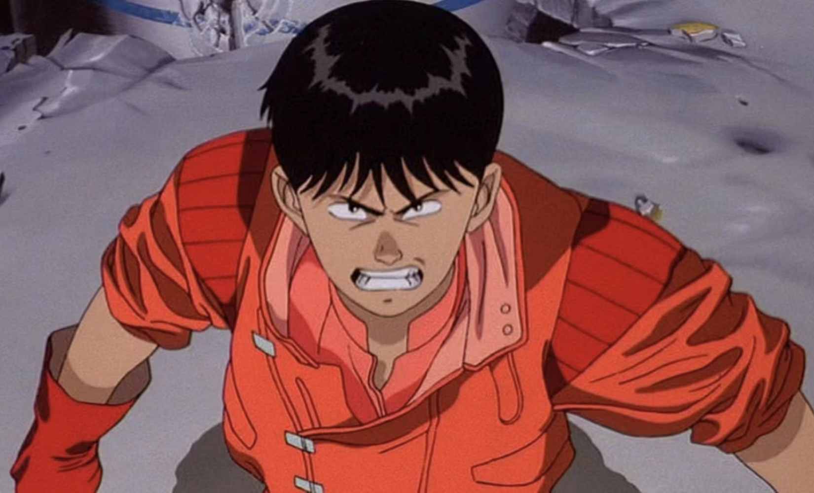

To make this page longer so that I can add a page anchor I am required to write a bunch of nonsense. The moon whispered to the purple cactus, "Are you ready to dance on the spaghetti bridge?" The waffles were laughing, but the giraffes were busy writing poetry in the sand. A mango rode a bicycle through the clouds, while jellybeans played the accordion. In the land of upside-down pineapples, the squirrels wore tuxedos and sang opera. A giant spoon floated across the sky, chasing a lost paperclip from 1987. The pancakes decided it was time to start a rock band called "The Sirens of Sycamore." Meanwhile, the octopus was knitting a sweater for a lonely sock.
A flying elephant borrowed a pencil from a cloud and drew a map to Narnia. The toaster refused to toast any more bread because it had discovered interpretive dance. The moon was secretly collecting stamps from every rainbow it could find. A penguin named Bob ran for mayor of Marshmallow Town, promising free glitter for all. A thunderstorm made a deal with a butterfly to swap their hats for a day. A purple unicorn ate an entire cake while debating philosophy with a tomato. The broccoli decided to build a fort out of pillows, but the carrots were being difficult.
A walrus with a monocle recited Shakespeare while juggling coconuts. The clouds were auditioning for a role in the next "Star Wars" movie, but only as extra cheese. A giraffe learned to moonwalk, and the squirrels were taking notes for their next dance competition. The moon finally found its favorite pair of socks, but they were mysteriously two sizes too big. A giraffe in a tutu performed a ballet, while the cactus judged with a cup of tea. And the jellyfish,secretly in love with the toaster, wrote it a sonnet under the full moon.